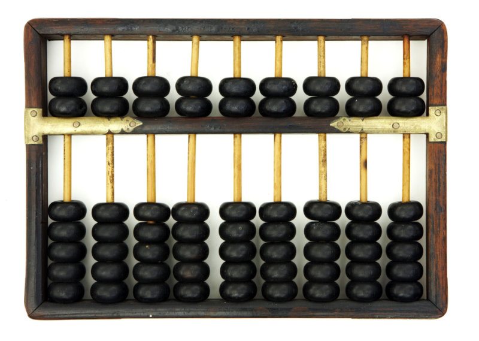
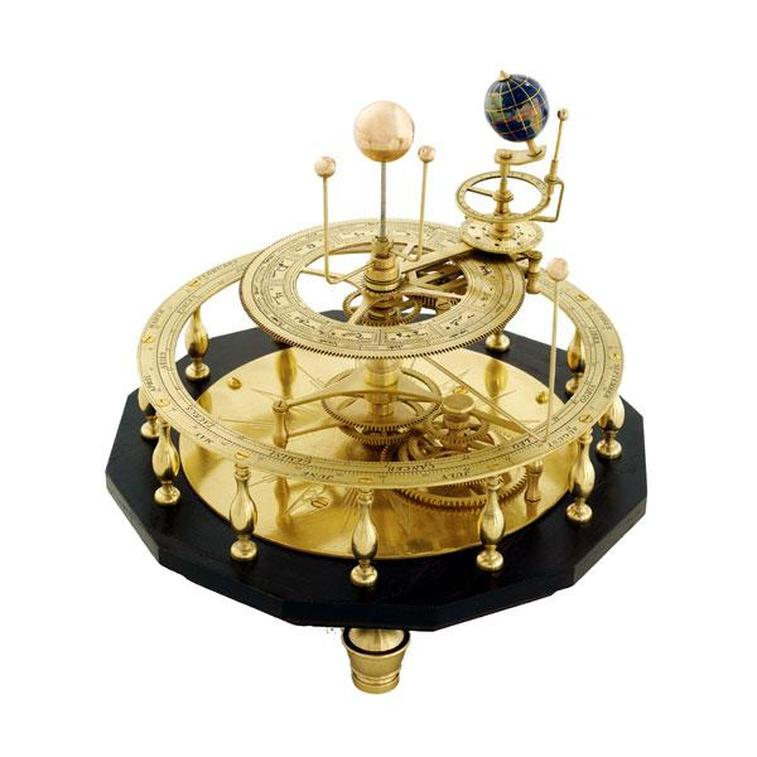
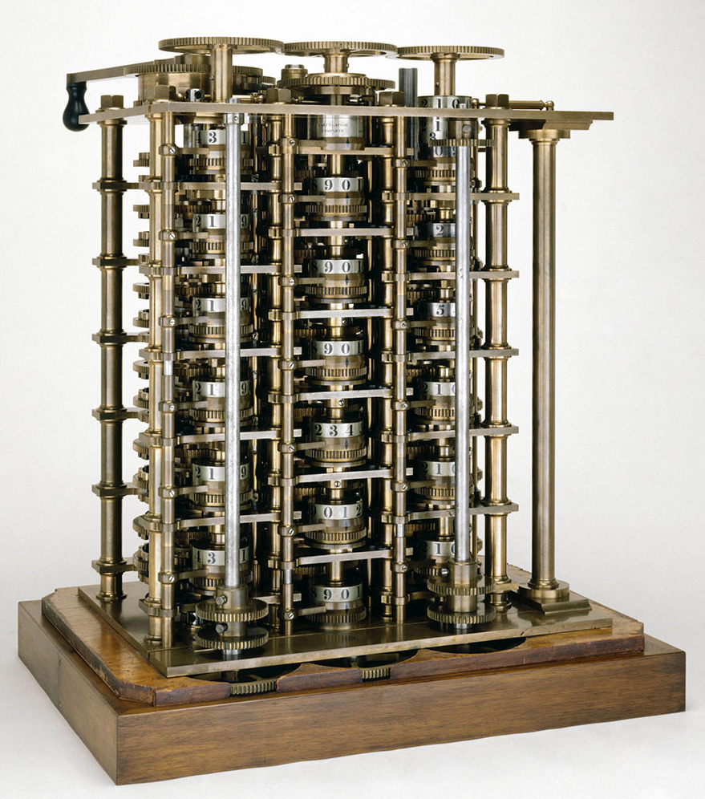
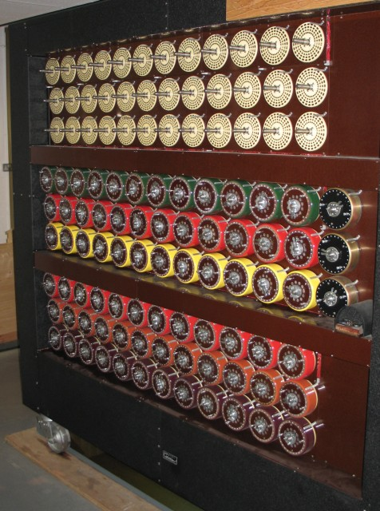
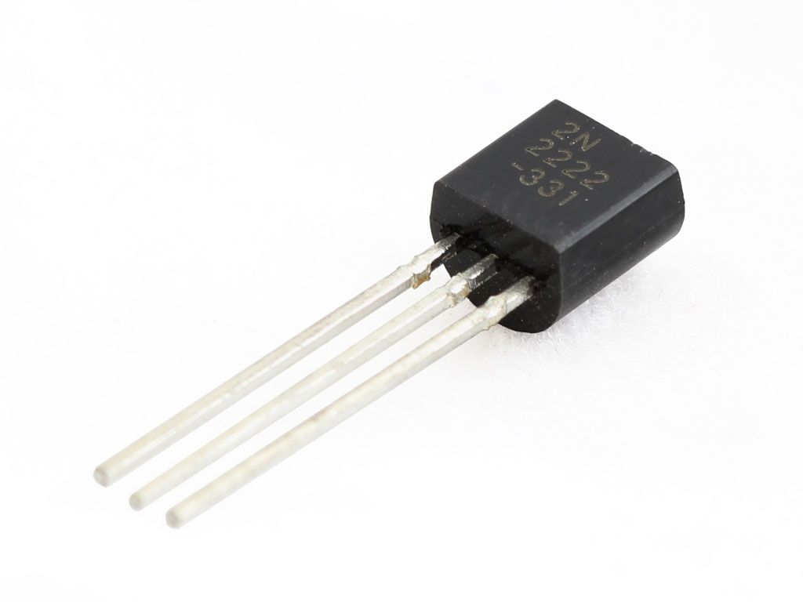
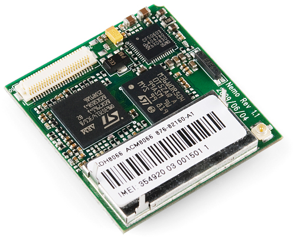
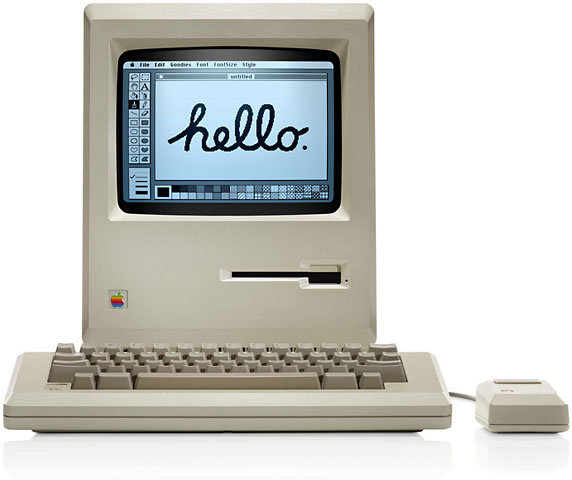

Computational Thinking
Computational Thinking:
A problem-solving approach that borrows techniques from computer science, notably abstraction, problem decomposition and the development of algorithms. Computational thinking is applied to a wide variety of problem domains and not just to the development of computer systems.
Decomposition:
The breaking down of a problem into smaller parts that are easier to solve. The smaller parts can sometimes be solved recursively; that is, they can be run again and again until that part of the problem is solved.
Object-oriented programming:
A program made up of objects (custom-made data structures to represent often-used real-world entities) that interact. Object-oriented languages include Java and C++.
Seymour Aubrey Paper was a South African-born American mathematician, computer scientist and educator. Throughout his career he spent a large proportion teaching and researching and MIT (Massachusetts Institute of Technology). Including the development and co-founder of Logo - a programming language aimed at helping students thinking ‘computationally’ - he also pioneered artificial intelligence and the constructionist movement in education. This movement was the idea that students develop mental models in their heads, and use information they already possess in order to gain new knowledge about the subject.
Logo was created as a tool to assist students in thinking about and solving problems. A small mobile robot called the “Logo Turtle” was developed. This device was shown to students, who would use it to solve simple problems. Continuing onwards, Papert also insisted that simplistic languages and/or programs that child can learn may also have functionality for expert users.
Collaborating with manufacturer Lego, Lego Mindstorms robotics kits were named after Papert’s groundbreaking 1980’s book.

Jeannette Wing is the corporate vice president of Microsoft Research and has been a heavy promoter of computational thinking. She has gone far to express the possibilities of computational thinking and abstraction techniques to help with not only programming and problem-solving inside the computing industry, but also outside in various other jobs and disciplines. Along with this she has worked in Universities such as the Carnegie Mellon University, United States and University of Southern California, also in the United States.

Decomposition is the breaking down of problems into smaller, easier to handle problems and tasks. This has various advantages to dealing with the problem as a whole and is part of computational thinking. It is advantageous as it allows smaller parts of the problems to be dealt with individually and in more depth rather than examining the original problem as a whole. This therefore allows a problem to be tackled faster and more efficiently, as well as ensuring the problem itself is addressed rather than slight alterations. Decomposition can also help in finding areas to start when tackling a problem for the first time and in creating a checklist to do.
Problems are harder to deal with when not broken down into smaller parts. By breaking a task down, we can more easily see and solve problems by breaking them down into smaller problems.
This applies heavily in complex systems. A complicated program can be easier to understand once broken down into smaller areas and examined individual.
Example:
Imagine you're making a cake. You would want to decompose the problem into various parts, in this case the parts will be ingredients and equipment.
Starting with ingredients you would break each down into how much you need to add and when to add them to the full ingredients.

Similarily we can break down the equipment we will use so it is easier to identify which pieces of equipment we need to use and when we need to use them with each ingredient. This again is an example of decomposition.

Put simply, abstraction is ignoring characteristics in order to concentrate on areas that we do need to work on.
We remove unecessary detail so that we only focus on the relevant things we want to develop.
For example in a video game production, we may remove a day/night cycle, or weather effects. This is done so more focus can be on more important issues such as game mechanics.
When we decompose problems we will often find parts and sections that share simularities with not only each other, but with previous problems.
By finding these similar problems we can tackle them efficiently, using our knowledge and understanding of solving a similar issue.
One example includes drawing cats. All cats share some common characteristics, for example eyes, tails and ears. In computational thinking these similarities and described as patterns and by finding them we can make tasks simpler and easier to solve as we can use the same solution for multiple problems.
The final corner piece of computational thinking, algorithms are a set of step-by-step instructions required to solve a problem.
Instructions are identified and the order in which they need to be carried out is done in that order. This can be expressed commonly through the use of pseudocode or flowcharts.
In order to tell computers what to do we require the intructions, to do this we need to plan the steps out via an algorithm.
Used for calculations, data processing and automation, computers are only as good as the algorithms they are given. This is true with the common phrase ‘Garbage in, garbage out’.

Computing itself has existed for longer than many believe, lasting for millennia rather than centuries. During the movement towards trade in ancient civilizations, the use of mathematics and therefore computing of calculations became more and more relevant. With this also came the need for reliability, thus the use of utilities such as an abacus and other devices came into use to deal with money. As such record keeping devices were used in order to track debts and allow the use and exchange of money, one of the first civilizations to use such a device were the Sumerians in 2400 bc, who used an abacus to help perform calculations.

Another example of an ancient computing device is the Antikythera mechanism. This device was an ancient analog computer and orrery (a clockwork model of the solar system) used to predict astronomical positions and a variety of other celestial events such as eclipses. The device itself, containing over 30 bronze gears used a complex clockwork mechanism. Due to the loss of this technology, similar technology only appeared with astronomical clocks in Europe, during the fourteenth century. This is an example of an analog computer, rather than modern digital computers. An analog computer is one which continuously changes aspect such as electrical, mechanical or hydraulic properties or quantities in order to demonstrate a solution to a problem. Digital computers, however, show solutions symbolically, for example through the use of symbols and numbers.
Following on with astronomical devices, a planisphere (holding its origins from the astrolabe) was a similar analog computing instrument that acted as a star chart. The device has two adjustable disks that rotated around a common pivot, this could be adjusted as such to display the visible stars for any set time and date. The device was extremely useful in the learning of star locations and constellations. An additional similar more simplistic analog computer is the slide rule, commonly known as the slipstick in the United States. The computer is used for multiplication and division, but also more complex operations such as roots, logarithms, and even trigonometry. This simple tool was one of the most common tools in science and engineering with it even remaining through some of the digital computing devices that aimed to take its place.
This trend of using tools to assist in calculations continued throughout the medieval age. It is possible that some programmable machines even existed in the medieval Muslim age. Programmability is an important and changing notion, adding versatility to the use of computing and allowing complexity to be overcome.

An important invention during the nineteenth century was the “difference engine” as depicted by Charles Babbage. A British mathematician, innovative thinker: Charles Babbage born on the 26th of December 1791 was a pioneer of computing. During the 1820’s his “Difference Engine” was designed that could perform mathematical calculations. Soon afterward he designed a better version of the pre-described machine, referring to it simply as “Difference Engine 2”. Continuing onwards Charles Babbage designed a more complex machine called the “Analytical Engine”. This machine contained a lot of the required components for modern computers including programmability using punched cards, as well as a memory unit to store numbers. Despite this, neither the second version or the “Analytical engine” were finished in Babbage’s lifetime.
Only until relatively recently in history has digital computing come about, requiring significant advancements in both mathematics and theories behind computers and their hardware. During WW2, in response to the Enigma Machine, the allies began work on a machine, of which could decode the encryption. The Enigma Machine itself allows an operator to type in a message, then scramble it through the use of three to five notched wheels or rotors, each of these displayed different letters of the alphabet. This machine only became more complex as German code expert added electronic circuits and improved the encryption device. Along with this high-level messages from the German Army were required to be decoded, this problem also was taken on by The British Government Code and Cypher School.

The machine given this to do was the British Bombe, as designed by Alan Turing, one of the professionals at the UK Government Code and Cypher School at Bletchley Park. The Bombe worked to discover multiple daily settings of the Enigma machines on the various German military networks. Specifically, the machine was used to find the set of rotors in use, their positions; rotor core start positions, the message key and one of the wirings on the plugboard. This was one of the most advancement autonomous machines during this time and aided in the effort against the Germans during WW2. Containing 36 Enigma rotor equivalents and three indicator drums, the Bombe marked a step up in technological advancement and eventually lead to the development of the Colossus. Due to this as various other reasons, Alan Turing is received as one of the pioneers of modern computers.
Contrary to popular belief, it was not Alan Turing that designed the Colossus, rather is was Tommy Flowers an English engineer in order to solve the issues and problems proposed by Max Newman, a British mathematician, and codebreaker. Despite this, Alan Turing’s Turingery, a method of ‘wheel-breaking’, lead to key components required for the computers to function. The series of computers given the nickname Colossus, are now regarded as the world’s first programmable, electronic, digital computers. The Colossus computer used thermionic valves (vacuum tubes) in order to represent bits and thyratrons ( a gas tube used as an electrical switch) to perform Boolean (True or False) and counting operations.
The actual purpose of the Colossus was in fact, similar to the British Bombe, was to decode encrypted telegraph messages from German High Command. A prototype version - Colossus Mark 1 - was working in December of 1943 and began to be operational at Bletchley Park on the 5th of February 1944. Later improved version began to be produced with Colossus Mark 2 working on the first of June 1944, just in time for the Normandy Landings. By the end of the war, a total of Ten Colossi were in use and the eleventh version was commissioned to be built. Through the use of the Colossi, the allied forced received vast amounts of high-level military intelligence from radiotelegraphy messages, as a result, it is estimated this shortened the wartime monumentally.
Drawing 7.5kW of power the Colossus was inputted with a paper tape of up to 20 000 x 5-bit characters in a continuous loop as well as a total of 1600 thermionic valve and Thyratrons in Mk1 and 2400 in Mk2.
These machines lead to what is known as the First Generation of computers. This generation is dictated by the vacuum tubes that were used for circuitry and magnetic drums for memory. The machines such as the Colossi often took up entire rooms due to their size and sometimes used magnetic drums for memory. The far from perfect first generation computers were expensive to operate, drew tremendous amounts of electricity and produced large amounts of heat, of which often lead to the cause of malfunctions. Relying entirely on machine language, the computers would often take days or weeks to set-up new programs which were inputted through a paper tape. Examples of this first generation of computers include the UNIVAC, which was the first commercial computer, which was received by the U.S. Census Bureau in 1951.

Advancements in technology eventually lead to the invention of transistors. A transistor is a device composed of a semiconductor material capable of amplifying or opening and closing a circuit. Immensely superior to previous generations use of vacuum tubing, transistors opened up new and fast improvements to computers such as becoming smaller, faster, cheaper, more energy-efficient and more reliable. Despite this transistors still produced large amounts of heat that could subject computer to damage. Similar to first generation computers, however, these second generation computers relied on inputs and outputs via paper tape and printouts. Improvements to memory also came about, with magnetic core technology taking over the previously used magnetic drums, allowing computers to store their instructions in their memory instead.
Not only did hardware advance with second generation computers but also programming the computers. Moving away from machine code and use of binary, the first assembly languages began to be used, meaning sets of instructions could be given in words. High-level languages even began to be produced such as COBOL and FORTRAN.
Interestingly these second generation computers were first used and developed for the atomic energy industry, which further shows the shift from governmental computers, to more commercial computers.

Following on the Third Generation of computers became applied from 1964 to 1971 with the introduction of Integrated Circuits. Transistors began to be miniaturized and placed on silicon chips called semiconductors. This effectively increased the processing power with faster speeds and high efficiency. Along with integrated circuits also marked the arrival of newer forms of input and output devices, improving the user interactability. Keyboards and monitors meant that punched cards and printouts no longer needed to be used to input into the computer and to receive outputs. The software also showed new arrival with the new devices being interfaced with operating systems. The operating system controlled the hardware, while numerous applications could be run simultaneously over the top.
The third generation brought computers to a mass audience not previously possible with the large and expensive predecessors. Rather these newer computers were able to be sold commercially and opened up to the general public for use. This again showed a movement from computer merely for industry and the soon appearance of household personal computers.
Bringing computers up to the present day was the invention of microprocessors. This hardware consisted of thousands of integrated circuits built onto a single silicon chip. The processing power of first generation computers taking up entire rooms could now be done ten times over and in the palm of one’s hand. The first chip, developed by Intel called The Intel 4004 chip included all components of the computer from the CPU (central processing unit) and memory to simple input and output controls onto a single chip.

In 1981 the first home computers were released by IBM and in 1984 Apple soon followed by introducing the Macintosh. This marked the era of personal computers and the continuing involvement of computers into everyday areas of life, to the point where it is hard to find in many areas of the world, someone who doesn’t have a computer in their pocket. As smaller and smaller computers became more and more powerful, they could be linked together forming networks which grew to become the mass of knowledge and interconnectivity now labeled the Internet. Simple but also monumental additions during this generation included the mouse, handheld devices, and GUI’s. Graphic User Interfaces opened up user-friendly interaction which only aided in the growing number of households owning a personal computer.
With the fourth generation leading to the present day, computers have still not stopped advancing. Even now more and more hardware is being invented and advancements have yet to cease, with fifth generation computers still in development, but being based on artificial intelligence. This area of computer science is focused on computers behaving similarly to humans, the term itself deriving from John McCarthy at MIT in 1956. Parallel processing (using more than one CPU to execute a program) and superconductors open artificial intelligence into reality while Quantum computation (application and use of quantum physics to computers) and molecular and nanotechnology will change the way we see computers drastically in years to come. The perceivable goal of fifth-generation computing would be to create devices that can understand and respond to natural language and are capable of self-organisation and possibly even the capacity to learn independently.
Overall computers have advanced exponentially in recent years, and have shown large contrasts and differences in comparison to the older analog computers used even later than 2000 bc. With better and better technology along with computer science advancing further each year, the history of computing is not yet over.
Resources:
http://www.webopedia.com/TERM/T/transistor.html
http://www.webopedia.com/DidYouKnow/Hardware_Software/FiveGenerations.asp#first-generation
https://en.wikipedia.org/wiki/Bombe
https://en.wikipedia.org/wiki/Max_Newman
https://en.wikipedia.org/wiki/Colossus_computer
https://en.wikipedia.org/wiki/Tommy_Flowers
http://www.webopedia.com/TERM/A/artificial_intelligence.html
http://www.webopedia.com/TERM/P/parallel_processing.html
http://www.webopedia.com/TERM/Q/quantum_computing.html